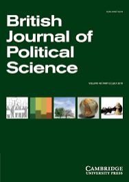

收录于合集

作品简介
【作者】 Liesbet Hooghe，政治科学家，担任W. R. Kenan Jr.北卡罗来纳大学教堂山分校政治学教授，佛罗伦萨欧洲大学研究所的研究员。
Gary Marks, 北卡罗莱纳大学教堂山大学的政治学系特聘教授，佛罗伦萨欧洲大学罗伯特·舒曼中心的常任研究员，他提出了“多层治理”的概念。
【编译】 赵婧如（国政学人编译人员 中国人民大学外交学专业本科生）
【校对】 缪高意、丁伟航
【审核】 晋玉
【排版】 陈育涵
【美编 】黄竹音
【来源】 Liesbet Hooghe, and Gary Marks. “A Postfunctionalist Theory of European Integration: From Permissive Consensus to Constraining.” British Journal of Political Science (2009): 1-23.
期刊简介

British Journal of Political Science，《英国政治学杂志》，创立于1971年，是剑桥大学出版社旗下的同行学术评审杂志，期刊收录范围涵盖政治科学的所有二级学科。2019-2020年的影响因子为4.292。
欧洲一体化的后功能主义理论：从宽容性共识到到限制性异议
A Postfunctionalist Theory of European Integration:
From Permissive Consensus to Constraining Dissensus.
Liesbet Hooghe and Gary Marks
主要内容
01
导读
在过去的十多年间，现存的理论已不足以解释欧洲一体化发展过程中产生的新的事实。应该如何解释决定欧洲一体化进程的公民投票的结果？如何解释迫使（thrust）欧盟问题受制于国内政治的公众意见，党派斗争以及来自民粹主义的压力？为什么一体化事务的决策过程发生了改变？这些问题让比较主义者重新审视欧洲一体化，但他们很少运用欧洲一体化理论进行研究。而本研究采用多层治理的方法来解释欧洲一体化，借此对欧盟政治的新发展和解释这一新发展的中层理论进行说明。
作者分析了 “欧盟成员国内部冲突模式如何制约欧洲一体化进程” 这一问题。作者表示随着各国政府开始积极对欧洲一体化问题上的公众压力进行回应，欧盟成员国国内政治和欧洲政治变得越来越紧密。解释一体化需要了解国内冲突的主体、问题与结果。
本篇文章采用 多层治理理论 来解释欧洲一体化。多层治理将区域一体化作为一种更普遍现象的一部分。在早期的研究中，作者发现国内组织与欧洲行为体之间存在直接联系，这与国家垄断其公民在国际关系中的代表权的主张相矛盾。在此，作者通过分析欧盟内部冲突模式是如何制约欧洲一体化进程来扩展这一论点。 为了解释一体化的程度和范围，需要了解潜在的冲突：涉及到谁、是关于什么问题的以及后果是什么。 关于欧洲的争论是复杂的，但最近的研究表明，它是有结构的，是连贯的，而不是混乱的。它与国内政治冲突有关，而不是独树一帜。尽管有些人尝试过，但没有人成功地将争论简化为理性的经济利益。 作者认为身份对于多层治理、特别是区域一体化具有决定性作用，其原因在于治理的本质。
治理是通过协调人类活动来实现集体利益的一种手段，有两个完全不同的目的，实现集体利益，并建立共同体。而 多层治理的挑战在于人类合作的功能需求很少与共同体的地域范围相一致。 共同体要求自治，而对自治的偏好几乎总是与对区域权威的职能要求不一致。作者认为身份认同对于多层治理，尤其是对于区域一体化具有决定性意义。因此，要理解欧洲一体化，必须先理解身份认同是如何以及何时在什么时候被调动起来的。
作者将本项研究描述为后功能主义的。虽然它赞成新功能主义和政府间主义的观点，即区域一体化是由绩效与现有的权力结构之间的不匹配引发的。但后功能主义并不认为一体化的结果会反映功能性压力。政治冲突决定一切，而作者认为这种冲突牵涉到集体身份。
本文可以分为 三个逻辑步骤 。首先，作者将公众和政党对欧洲一体化的偏好理论化。其次，作者从理论上分析了什么条件下公众和政党偏好会对欧洲一体化产生重要影响，即欧洲一体化被政治化的条件。作者最后假设了政治化对欧洲一体化实质性特征产生的后果，同时也论述了为什么新功能主义和政府间主义已经对欧盟研究不太有用。
02
新功能主义和政府间主义
新功能主义和政府间主义都是对功能主义理论的修正。功能主义认为人类问题涉及的区域范围和政治权威管辖的领土范围的不匹配会产生管辖权改革的压力。新功能主义认为是跨国利益集团为了获得经济利益而产生的对超国家权威的需求推动了司法管辖的改革。跨国动员、超国家激进主义和政策“外溢”会产生部门压力，推动管辖权改革，产生制度化结果。在1955-56年的“空椅子危机”后，政府间主义成为最有影响力的一体化理论，它将区域一体化视为国家间相互谈判的结果。
新功能主义者和自由政府间主义者之间的分歧不应掩盖两个共同点。 首先，双方都认为国家的偏好是经济性的。第二，它们都关注（经济）利益集团之间的分配谈判。 新功能主义者认为，帕累托改善的经济收益导致跨国利益集团和超国家行为体追求区域一体化与经济改革。政府间自由主义者则强调，对欧洲一体化的偏好反映了经济收益在国家或企业集团之间的分配。
本篇文章的核心观点是 超越利益集团的经济偏好来理解欧洲一体化的进程。 在20世纪90年代，随着单一市场被延伸至货币联盟，建立政治联盟又一次提上日程，国内的党派冲突不断加剧，欧洲一体化的问题从利益集团外溢至公众领域。在一体化开始的最初三十年间，一体化对大多数人的影响是有限的，公众意见处于休眠状态，这是“宽容性共识”的年代，精英垄断一体化相关决策。相反，从1991年起进入“限制性异议”的时期，精英在协商欧洲问题时受到公众意见的影响。
新功能主义虽然洞悉到未来的欧洲问题会被政治化，但它认为政治化只会引领国家政府支持更深入的一体化。而政府间主义则没有将公众争议纳入到考量中。
03
关于欧洲争论的结构
起初，欧洲一体化是以精英为中心的这一观点在1979年欧洲议会(European Parliament)和直接选举(direct election)诞生后依然存在，欧洲选举是对各国政府的民意测验。 学者认为精英主导的欧洲一体化不是一个公众性问题，这一观点基于以下三个假定：公众对欧洲一体化的态度很肤浅，因此无法为政党定位提供一个稳定的选举激励结构；对一体化关注程度较低、而且由一体化引发的问题是自成一体的，与塑造政治竞争的基本矛盾无关。 而1991年马斯特里赫条约通过后，一些研究人员发现，欧洲一体化对公众来说基本上不是问题这一观点基于三个假设现在都不成立。关于欧洲一体化的决策制定进入到政党竞争、选举和公投的领域，以上三个假定逐渐消失。调查表明，许多国家的媒体报道、政策声明、抗议活动与社会运动中，关于欧洲问题的比例显著增加。欧洲一体化成为西欧国家国内政党竞争中第三重要的事情。
这并不意味着公众变得更加具有疑欧倾向，而是意味着精英需要为被动员起来的疑欧公众留出空间。 政府领导人和利益集团不再能够对欧洲问题闭门决策，一体化已经引发政党竞争。公众意见已经成为党派精英之间角逐政治权力的战略互动领域。
04
公众意见
对欧洲一体化缺乏了解的公众往往根据 身份认同 以及 经济利益 来形成对欧洲一体化的态度。这是因为欧盟不仅是实现更低的经济交易成本的工具，更是促进跨国社会互动的多层治理体系的一部分。研究者探查出，民族认同会影响公民对欧洲一体化的支持与否态度。人类具有“天生的种族中心倾向”（‘innate ethnocentric tendency’），这导致人们更倾向支持自己所属的群体，但这种对某一群体的偏爱并不会自然地产生针对其他群体的冲突或敌意。个人通常会有多重身份，重要的是个人不同的集体身份之间如何作用，精英们在讨论时是否/如何利用（mobilize）了不同的集体身份。
在解释身份认同如何影响公众对于欧洲一体化的意见前，作者对特定情况做出了概括： 1. 与（政治）精英和利益集团相比，身份认同对公众的影响力度更强。2. 身份认同和大多数政治目标无关，必须由政治来塑造。3.个人对群体身份的认同越具有排他性，就越不支持跨群体的管辖权。
目前欧洲存在着管辖权快速改革与公民身份认同相对稳定的矛盾。有着强烈民族感情的个体也可以对欧洲一体化持积极态度，关键在于此人对民族认同的构想是排他的还是包容的。那些具有排他性民族认同的人，即坚信对祖国的热爱拥护与接纳欧洲一体化的体制不可兼容的人，往往更倾向于疑欧主义。
后功能主义不同于新功能主义和政府间主义的地方在于它提出了影响区域一体化的因素，即身份认同、绩效与分配三者都会影响管辖权。当一个问题的经济影响模糊不清，但有明确的公共影响且受公众的关注与辩论时，认同因素的作用越强。欧洲一体化受到阻力并非因为人们转变了观念，而是因为公众取代精英对很多关键问题的决策施加影响，让国内政治和欧洲问题结合起来。欧洲认同建立在对民族认同的理解的基础上。公众比精英更强调民族独特性，因为公众更扎根本民族，更依赖民族媒体过滤后的信息。这会导致政治理念分歧的增大与共识范围的相应收缩。
05
政治党派
欧洲问题是如何与现行的的国内冲突模式相联系的呢？起初，研究人员认为关于欧盟的争论会以塑造了大多数欧洲国家内部政治竞争体系的“左翼vs右翼”维度为图谱，分配性的经济因素是结盟的逻辑。一方以社会民主党与基督教民主党为主，支持在欧洲层面进行市场修正，同时尽力保留国家对于再分配的权力；反对方以保守主义者和经济自由主义者为核心，旨在建立欧洲范围的没有管制的市场。但是欧洲层面与国内政策关于再分配的左右之争不同。因为欧洲层面的再分配不仅是从富人向穷人转移财富，而且是从西北欧的富国向东南欧的穷国转移，而人们不愿意把自己的财富/收入再分配给“不属于自己群体”的人。因此，在欧洲层次的“左翼/右翼”之争是关于社会监管，而不是再分配，这分化了部分左翼。社会民主党也看到了在欧洲层面实施协调的财政政策并建立“公民欧洲”的好处。
但2000年早期，作者发现将欧洲问题的政治化看作管理型资本主义与市场自由主义的斗争是不充分的，取而代之的是Gal（绿党/选择党/自由党）与Tan（传统主义/权威/民族主义政党）的政治分歧。作者提出，Gal与Tan的分歧和与民族认同相关。Tan强调民族主权、民族共同体和民族自治，拒绝欧洲一体化；保守政党有适度的Tan倾向，其内部的民族主义者保护民族文化与主权，反对移民与国际政府，但保守政党中的新自由主义者支持经济一体化；同样，Gal政党支持欧洲一体化与文化多元的欧洲社会。所以欧洲一体化的反对者从上个世纪80年代的社会民主党与激进左翼变成了激进的Tan政党。
06
在什么时候一个问题会被政治化？
一个问题是否会进入大众政治领域不取决于它内在的重要性，而在于是否有政党会用它做文章。当大众政治和利益集团都开始发挥作用时，前者往往会压倒后者。而当一个问题被政治化，政党与公众关注这一问题之后，利益集团的游说可能会适得其反。作者假定政党领导人是否会将一个问题政治化取决于三个动机：1.政党在该问题上的立场。一个问题越有可能给政党带来潜在的选民支持率，领导人越会将它用于与其他政党竞争的议题。2.政党的意识形态声誉。政党本身具有长期的、纲领性的承诺，会限制政党使他们无法轻易转变立场。3.政党在这个问题上的分裂/团结程度。政党对一个问题的内部分歧越大，越会拒绝将其政治化。
直到20世纪80年代，主流政党都避免将欧洲一体化问题政治化。因为欧洲一体化在公众领域中并不突出，公众比精英更倾向于疑欧主义，而且而且过度考虑此问题会加剧党内民族主义者与自由主义者的分歧，损害政党的凝聚力。
而1991年马斯特里赫条约是欧洲一体化的转折点，它开启了精英与公众之间的复杂博弈。该条约在丹麦被拒绝、在法国以微弱优势险胜，这展现了精英与公众之间的隔阂，支持了民粹主义者的看法，即关于欧盟的决策不再能被国家掌权者直接合法化，必须要得到公众普遍的支持。
大多数主流政党将欧洲一体化视为事业，拒绝将其政治化。但民粹主义者与在野党感受到机会，它们的疑欧主义倾向于公众意见更加接近，鼓吹对于欧洲问题的辩论：对于Tan政党和保守政党的民族主义者来说，反对的焦点在于欧洲一体化危害民族共同体与民族认同；对于激进左翼来说，争论在于分配问题。
07
结论
本文的目的在于提出 公众意见、政党竞争以及身份认同是影响区域一体化结果的重要变量。 强烈的领土身份认同会产生对区域一体化或支持或拒绝的态度，关键在于这种身份认同是否是排他性，以及是否被疑欧政党动员起来。
随着一体化范围与程度的加深，以及持有排他性民族认同的公众被疑欧政党越来越多的煽动起来，作者认为未来的欧洲一体化会受到更多的阻力。国家政府在条约谈判时会害怕被国内公投否决；即使没有公投，政党领导人也担忧他们的欧洲政策带来不利的选举后果。
欧盟是多层治理体系的一部分，受到身份政治以及功能性和分配性压力的驱动。对于政治共同体的理解和关于“我们”是谁的身份认同是决定区域一体化进程与管辖权改革设计的核心。
译者评述 ****
本篇文章致力于提出一个可以解释近年来欧洲一体化屡屡受阻的新的一体化理论，在对之前两大一体化理论——新功能主义与自由政府间主义理论的继承与创新的基础之上提出了后功能主义理论。
后功能主义对新功能主义的批判立新之处主要包括两点。第一，后功能主义者关注到欧洲问题不再是“精英驱动”模式的，无论主流政党如何规避，它已经深受政党竞争，公众意见以及相应的政治表达，比如公投、选举的影响。国内政治化往往会给欧洲一体化带来负面影响，导致更多的政治冲突而非公众对一体化的功能性支持。第二，后功能主义超越新功能主义理论的理性主义假定,把认同作为研究一体化的重要考量因素。新功能主义认为一体化主要受到跨国利益集团和精英的共同作用，这些行为体需要欧共体来满足他们的利益的驱动。但霍克和马科斯认为这更适合分析上世纪50到80年代后期的欧洲一体化。他们认为除了经济利益和收益分配的谈判之外，公众是否支持一体化主要取决于他们持有的的民族认同是否为包容性的。公民不愿意接受自身所属共同体之外的治理安排。他们强调“认同对于普遍的多层治理是决定性的,特别是对于区域一体化来说”。
据詹姆斯·卡博拉索的区分,后功能主义理论应该属于区域一体化理论的第三波浪潮。它主要集中研究国内政治如何回应欧洲化冲击下欧洲一体化的发展与影响的。霍克和马科斯的创新之处在于吸收了建构主义的元素，将认同看作影响欧洲一体化的一个重要变量。近年来欧洲一体化屡遭公投失败和社会抗议，与持有排他性民族认同的公众被疑欧政党充分调动起来进行政治参与和政治表达是分不开的，这也反映出近年来欧洲一体化停滞背后的欧洲认同与“欧洲人”身份建构的困境。
那么是什么力量在维系欧洲内部的民族主义与顽固的排他性民族认同呢？为什么早在二战后联邦主义就已提出的“欧洲攻势”“欧洲公民”历经半个多世纪仍没有实现去民族主义的稳步发展？
有学者提出，这是因为民族国家有着目前不能被替代的政治功能：
一是确保相当范围内的政治团结，弥补资本主义生产方式和自由市场经济对传统道德和宗教共同体的瓦解。工业进步带来生产的集中化和官僚制的“理性化”，破坏了人们过去笃信的传统等级制和社会生活秩序，大量个体失去了社会和情感上的安全感和标准，个人的政治忠诚从君王、领主、宗族和部落转移到民族国家之上，民族主义成为世俗的宗教。
二是民族认同是维持福利国家的道德前提，福利国家带来的去市场化是欧洲一体化成功的重要隐性条件。由研究表明，有的地区更依赖欧洲市场，但居住其中的公民并没有更加认同欧盟的集体身份，融入欧洲市场往往意味着更长的加班时间、更强的劳动密度或者更少的劳动保护。欧洲创造单一市场增加局部的社会代价，影响一部分人的生存状况，而正是以民族共同体为基本单位的福利国家制度，保护国内的劳动力市场，缓解取消关税、资本自由流动等自由主义经济政策对公民个人造成的冲击，有效地防止了市场从社会中“脱嵌”。
三是民族认同是共识的再生产源泉，而共识的存在是现代民主制度有效运行的基本前提。民主制度不在于如何民主，民主可以就任何问题进行表决，但民主本身无法决定谁才是民主的主体，作为现代政府权威来源的“人民”应该是哪些人?而这个问题的无法回答正是欧盟与欧洲认同的困境所在。[1]“文化欧洲”和“政治欧洲”无法就谁属于欧州人达成一致，共识的缺失导致欧盟的民主体制与超国家决策的合法性的削弱。而民族国家通过对内强调“我者”( the Self) 的政治权利和对外区分“他者”( the Other) 的身份，构成了一个边界稳定的“命运共同体”，确立了个体与民族国家之间“共存共荣”的关系，为民主的运行框定了稳定的边界和范围。各国民众由于欧盟层面的民主赤字，更会转而将自己的需求和认同投射到民族国家层面。
托马斯里塞提出，现在的欧洲化或者欧洲认同不可能在脱离民族认同的基础上形成。后功能主义者敏锐地察觉到受到民族主义阻碍而形成缓慢的公众对欧洲认同是抑制欧洲一体化高速发展的重要原因，但“认同”究竟能多大程度上影响欧洲一体化，是否像后功能主义者和建构主义者所认定的观念层次的认同对一体化的行为选择有根本性的作用？推动欧洲一体化是否要以建构一个统一的，普遍的“欧洲认同”为前提？也许不是这样。
学者研究发现，尽管欧盟也设立了超国家机构与体制，并有意识地努力创造欧洲认同，但通过制度主义的方式来影响公众的身份认同的效果并不明显。调查表明，“包容性民主主义者”在欧洲人中过去十年的占比一直保持稳定，并未显著增加或减少。也就是说，欧洲一体化将一直受到“排斥性民族主义者”的挑战，但并不因为“欧洲认同”的缺失就永远无法前进。
欧盟集体认同出现困境，只是意味着欧洲精英们无法通过建构统一的欧洲认同，来增强欧盟超国家权力和机构的公共合法性，来推动欧洲一体化，并不意味着欧洲一体化的终结。主流精英会尽力弥补与大众之间的鸿沟，并消除极端政党的非理性动员影响,使得大众能够理性和公正地看待欧洲一体化，对经济因素与身份认同进行综合考量。而且,大众和政党意见中其实也并非完全没有其合理的方面,国内政治中有关欧洲一体化的讨论也有利于主流政党和政府更为谨慎和认真地考虑欧洲一体化对本国带来的实际影响，这种政治化进程将有利于欧洲的一体化进程、并合理化（政治）精英提出的战略。除此之外，欧洲认同的分裂以及随之出现的民族认同的回潮，正好增强了民族国家的权力合法性和影响力。由于共同命运，共同身份的统一性缺失，欧洲一体化未来很可能以维护国家利益为合法性继续进行，一体化的产物可能不是超国家的政治经济实体，而是基于国家共同利益和博弈互动产生的彼此合作的制度选择，或许是自由政府间主义的复兴。
参考文献
[1] 梁雪村. 欧盟为什么需要民族国家? [J]. 欧洲研究, 2020(1): 1-26.
[2] 李明明. 欧洲联盟的集体认同研究[D]. 上海：复旦大学博士论文，2004：16-19.
[3] 李明明. 后功能主义理论与欧洲一体化[J]. 欧洲研究, 2009(4): 33-45 .
[4] 房宪乐. 政府间主义与欧洲一体化[J]. 欧洲研究, 2002(1): 1-11.
[5] Anderson, Benedict. (1991). Imagined Communities: Reflections on the Origin and Spread of Nationalism. London: Verso.
[6] Hooghe,L.,& Marks,G.(2009). A postfunctionalist theory of European integration: From permissive consensus to constraining dissensus. British Journal of Political Science, 39(1): 1-23. doi:http://dx.doi.org/10.1017/S0007123408000409.
[7] Thomas Risse. (2010). A COMMUNITY OF EUROPEANS? Transnational Identities and Public Spheres. Ithaca: Cornell University Press.
文章观点不代表本平台观点，本平台评译分享的文章均出于专业学习之用, 不以任何盈利为目的，内容主要呈现对原文的介绍，原文内容请通过各高校购买的数据库自行下载
**
**
**
**
**
**
添加 “国小政”微信
获取最新资讯


国政学人
支持学术公益与知识传播
微信扫一扫赞赏作者 __赞赏
已喜欢，对作者说句悄悄话
取消 __
发送给作者
发送
最多40字，当前共字
上一页 1/3 下一页
长按二维码向我转账
支持学术公益与知识传播
受苹果公司新规定影响，微信 iOS 版的赞赏功能被关闭，可通过二维码转账支持公众号。